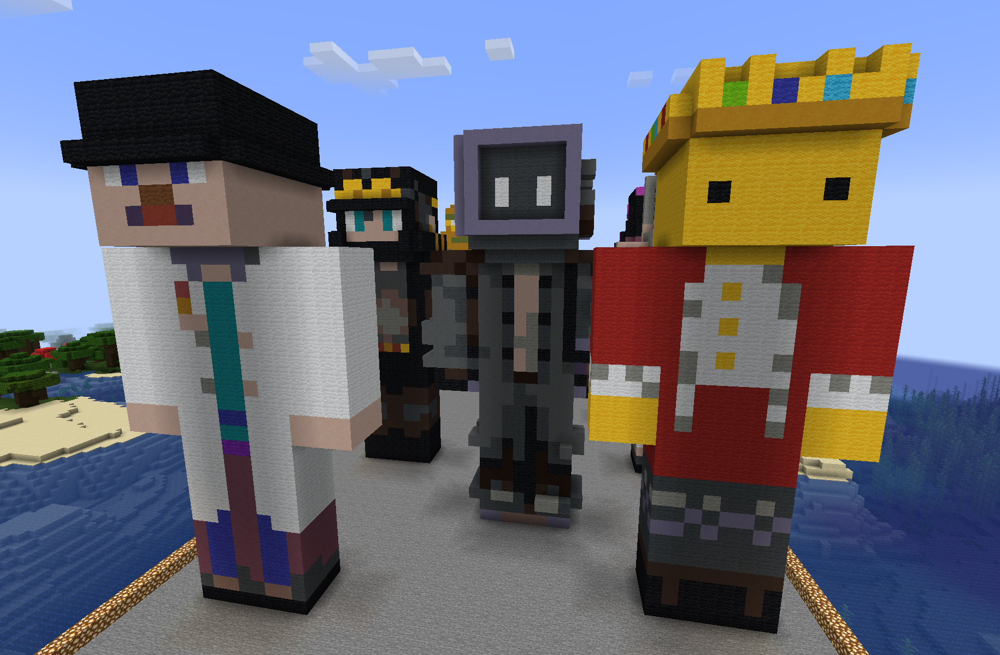
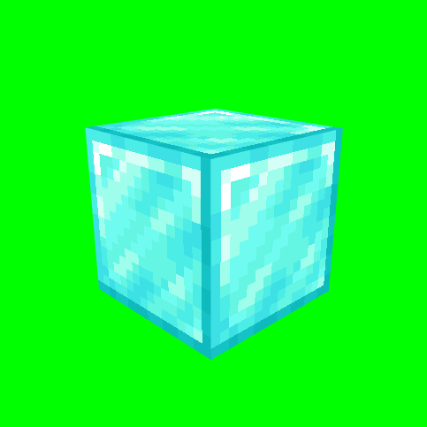
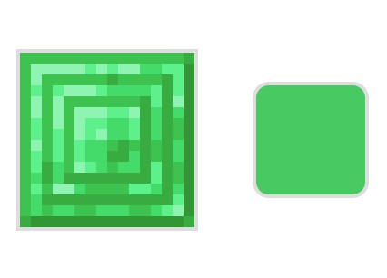

hoolagin6's Tools
Creative utilities for Minecraft

Huge Player Skin Statue Builder
Generate massive player statues from any Minecraft skin. Perfect for servers, adventure maps, and impressive builds.
Use Tool

Spinning Block Green Screen Tool
Create perfect spinning block clips to green screen on to your videos or other media.
Use Tool

Texture Color Extractor
Easily extract the average RGB and hex color of block textures.
Use Tool